Řezné podmínky, výkon na vřetenu, závity, tolerance, materiály a PathCheck pro programy Heidenhain. V telefonu u stroje i na PC v kanceláři.
Cutting data, spindle power, threads, tolerances, materials and PathCheck for Heidenhain programs. On your phone at the machine and on your PC in the office.
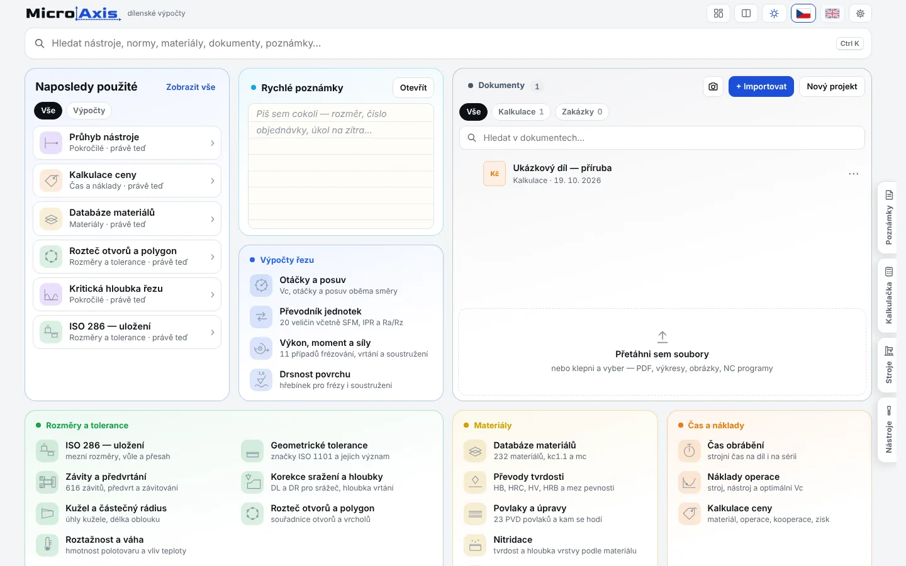
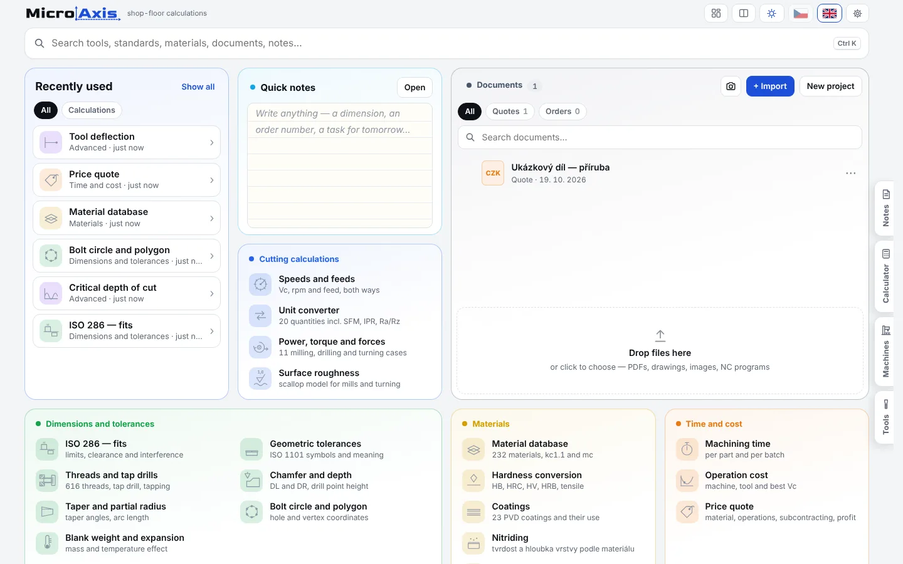
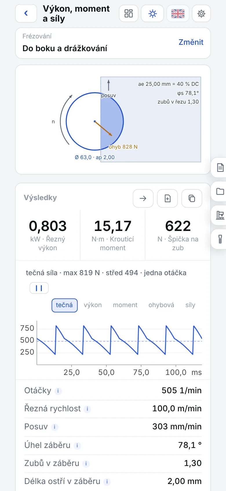
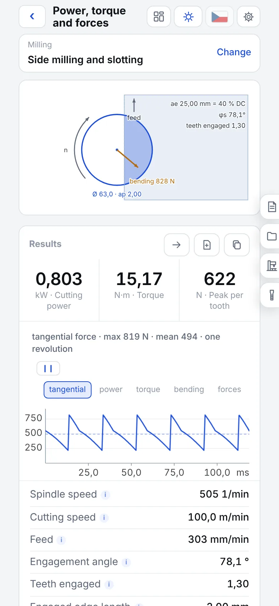
Co umí
What it does
Vychází z ověřeného výpočetního sešitu z praxe. Výsledky sedí s referenčními výpočty na desetiny procenta.
Built from a proven calculation workbook used in practice. Results match the reference calculations to a fraction of a percent.
PathCheck
PathCheck načte program Heidenhain (Klartext), nasimuluje úběr materiálu a ukáže, kde hrozí problém.
PathCheck loads a Heidenhain (Klartext) program, simulates material removal and shows where trouble is.
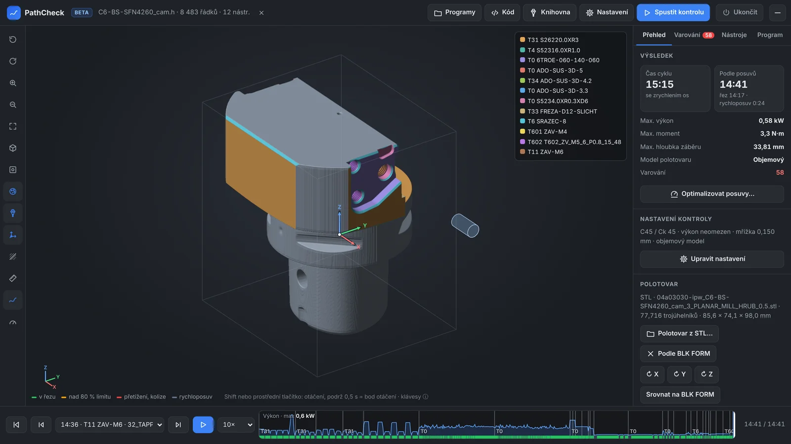
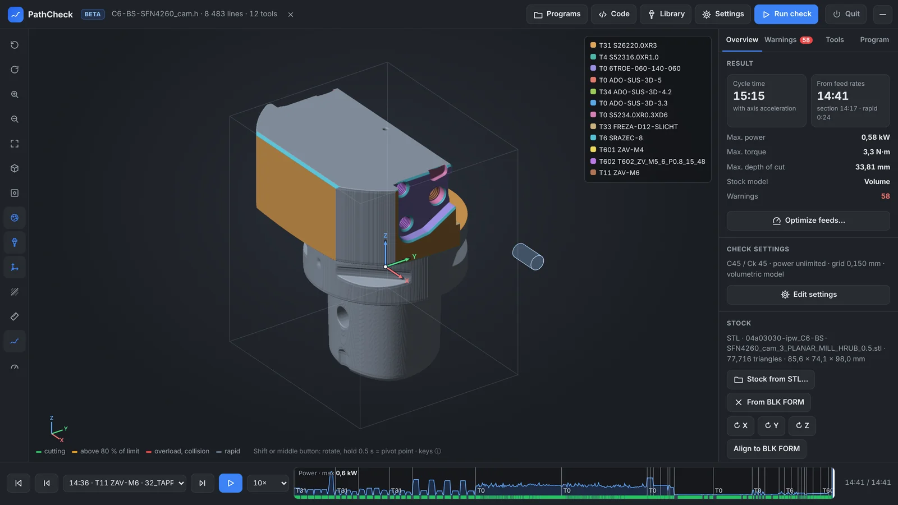
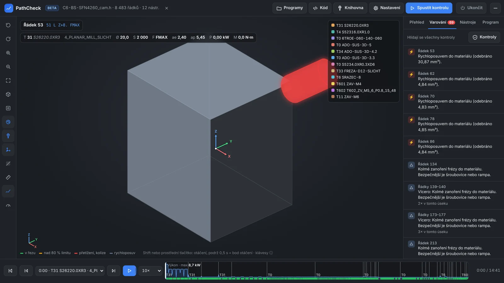
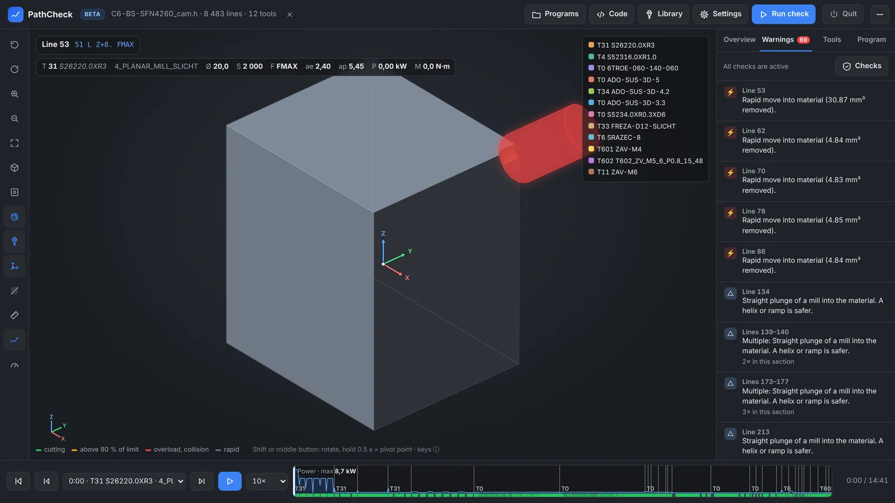
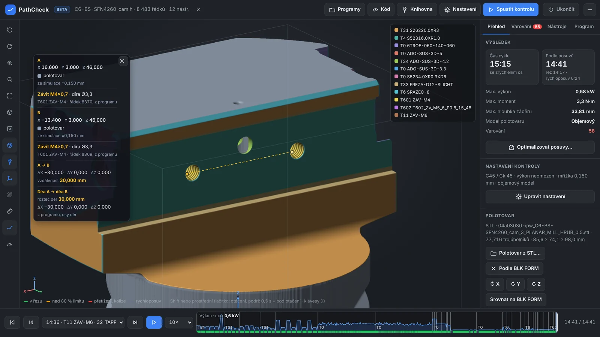
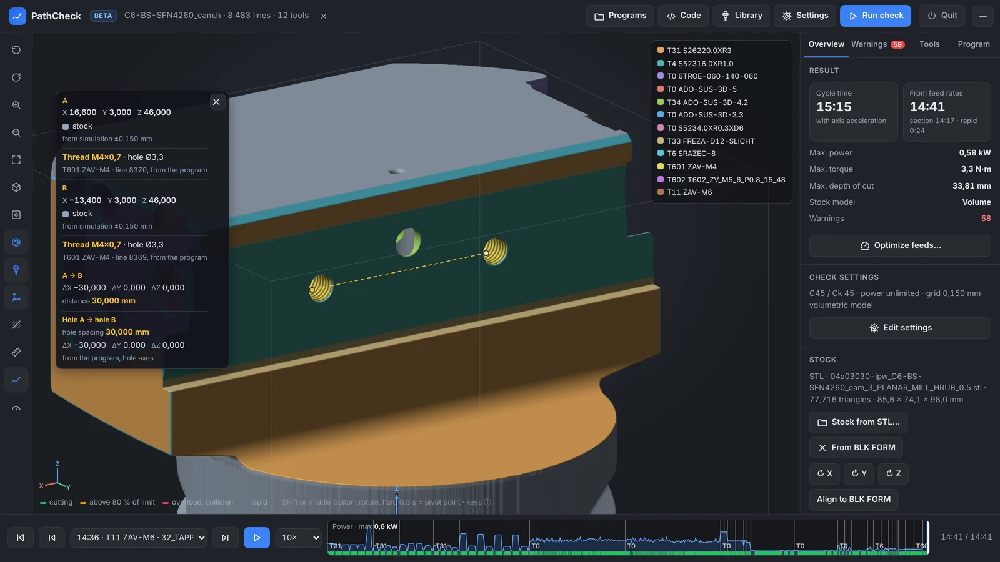
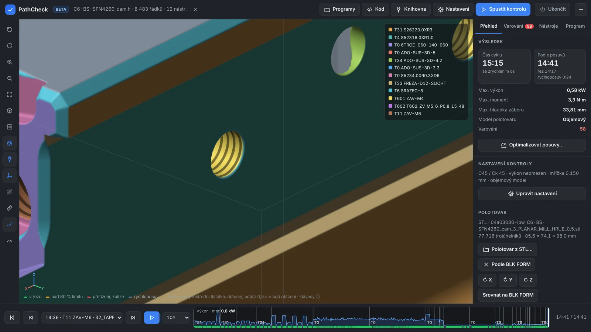
Ukázky
Screenshots
Základní výpočty jsou zdarma. MicroAxis Pro je jednorázový nákup v aplikaci a odemkne PathCheck, zálohu na Google Disk a další funkce.
The basic calculations are free. MicroAxis Pro is a one-time in-app purchase that unlocks PathCheck, Google Drive backup and more.